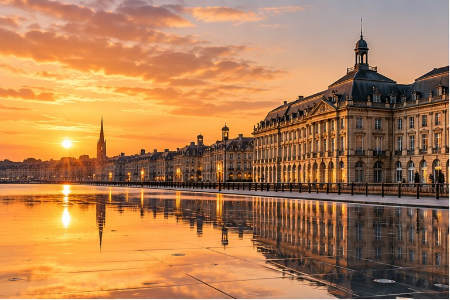
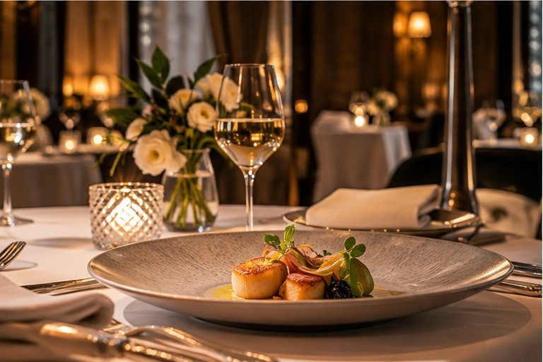
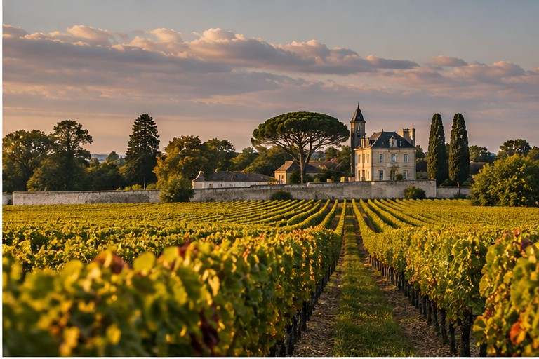
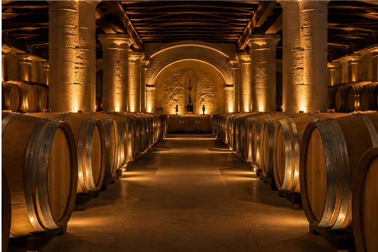

Tocca una giornata per vedere il programma completo
Hotel, basiliche, due passeggiate e Arcada
Lynch-Bages, Café Lavinal e Route des Châteaux

Mercato, vino, Saint-Michel e cena

Ultima passeggiata, auto e volo 14:55
Primo giorno: centro storico e cena da Arcada
Una visita strutturata e pomeriggio panoramico
Premium Visit & Wine Tasting · English · 2 persone · 3 vini · €25 p.p. (CONFERMATO)
Giornata urbana più rilassata
Ultimo giro e rientro
Grand Théâtre → Triangle d’Or → Place Gambetta → shopping
Fine viaggio
Tutto il viaggio, date e orari
30 OTT · 20:00 · cena
31 OTT · 09:00 · Premium Visit
31 OTT · 12:15 · 2 persone
31 OTT · 21:00 · cena
1 NOV · 11:00–14:00
1 NOV · 19:30 · 3 rue des Faussets
Pernottamento, auto e parcheggio
Cantine, quartieri e tappe principali
Bordeaux e percorso nel Médoc